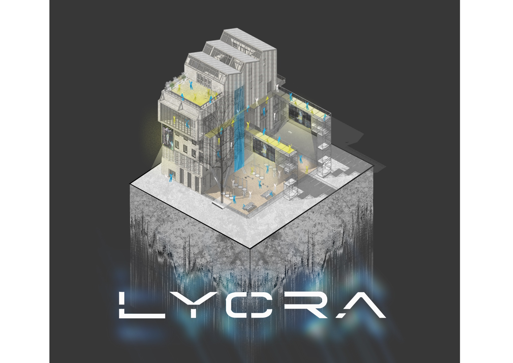
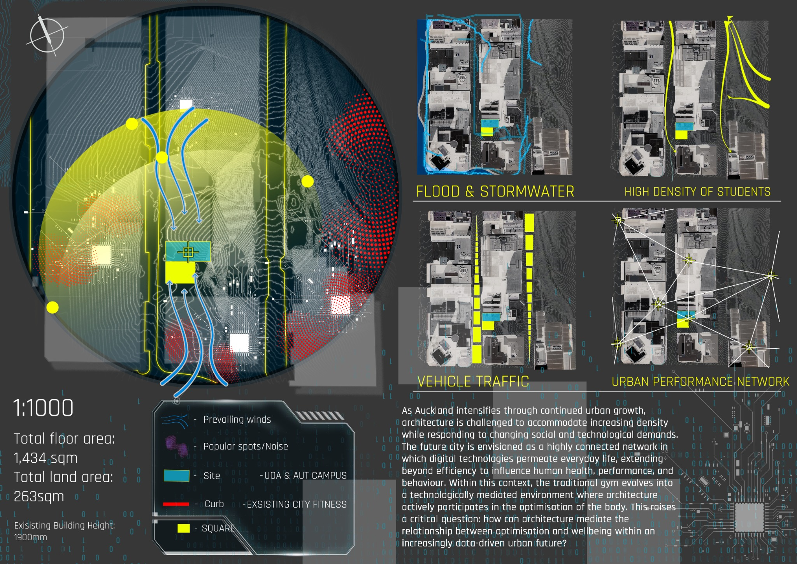
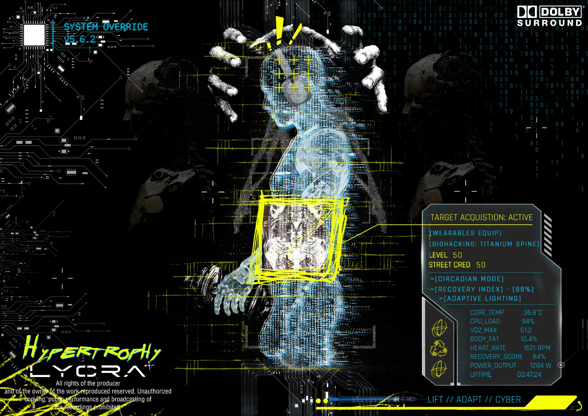
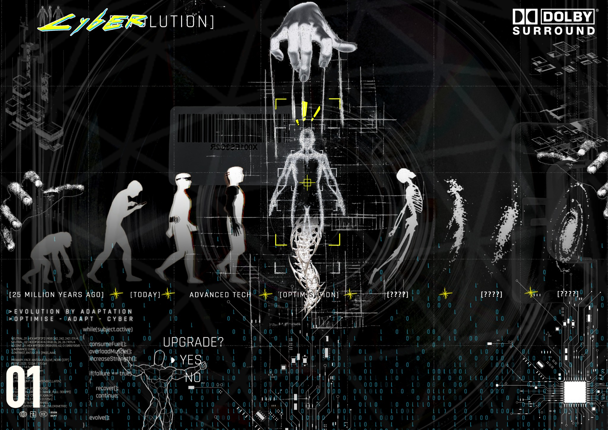
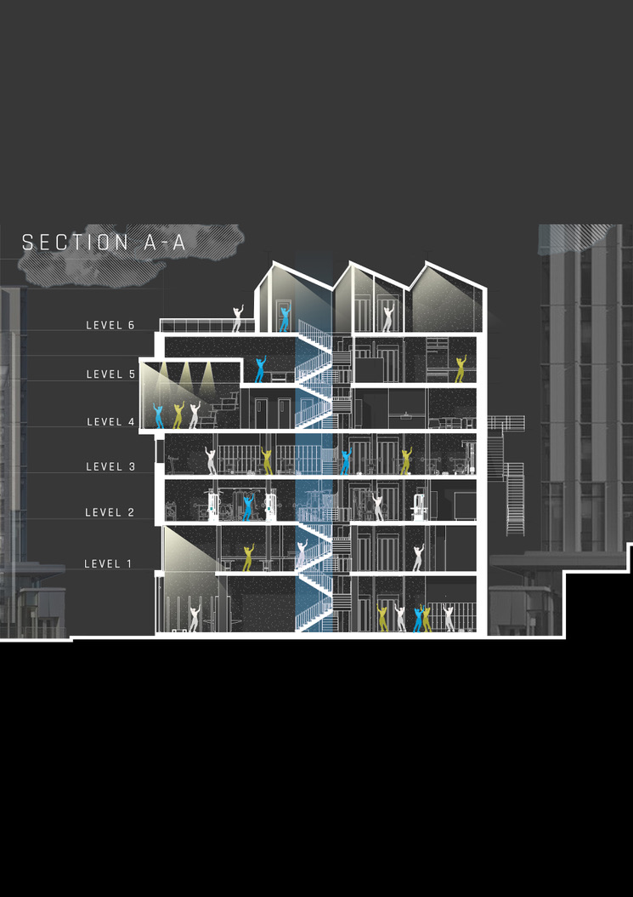
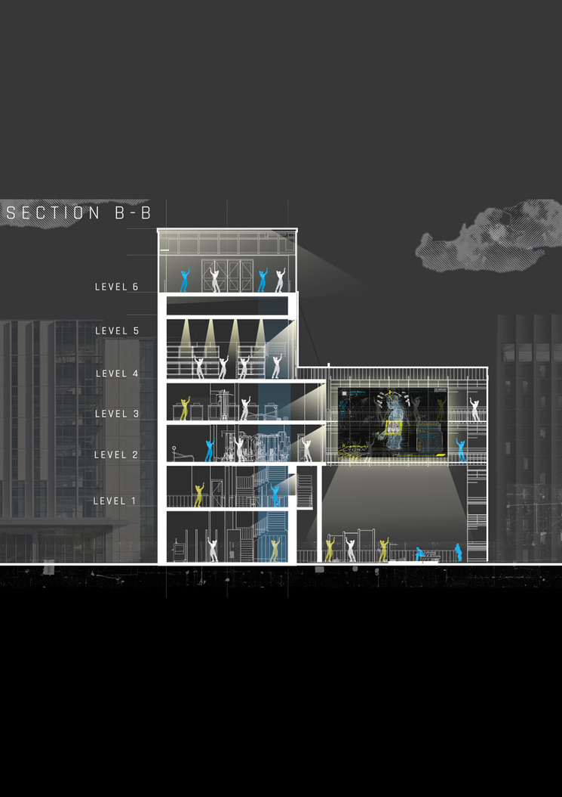
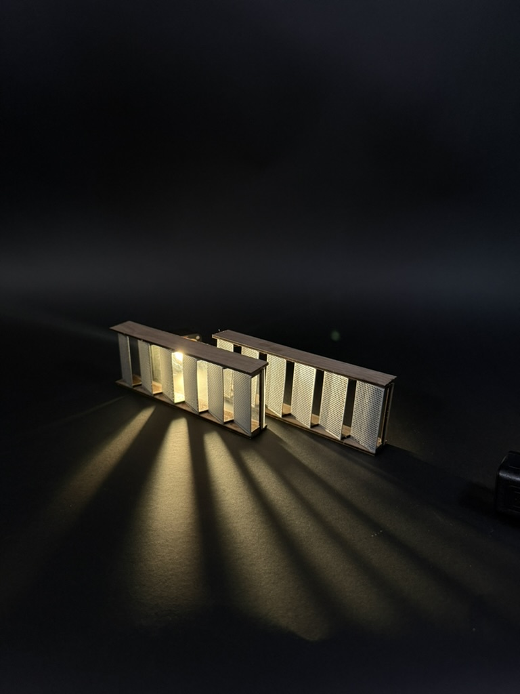
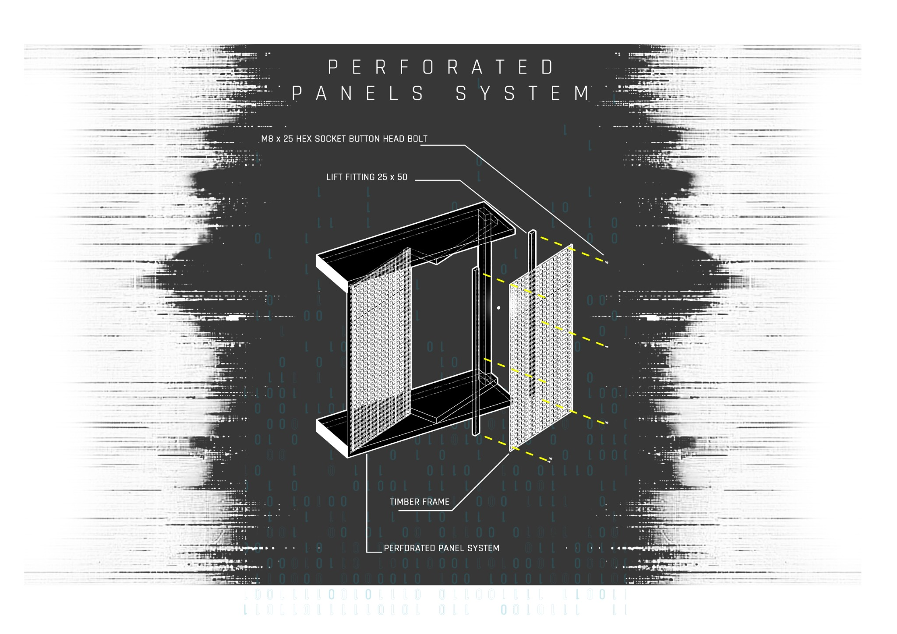
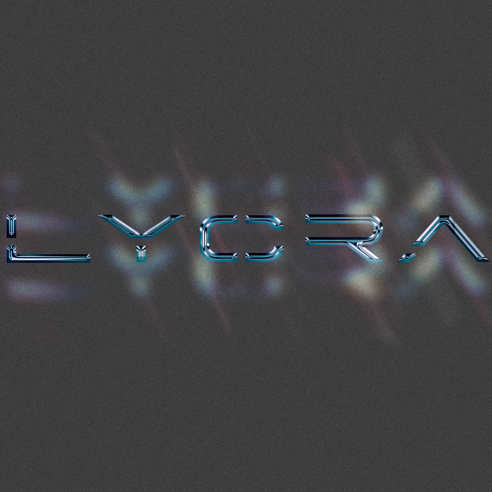
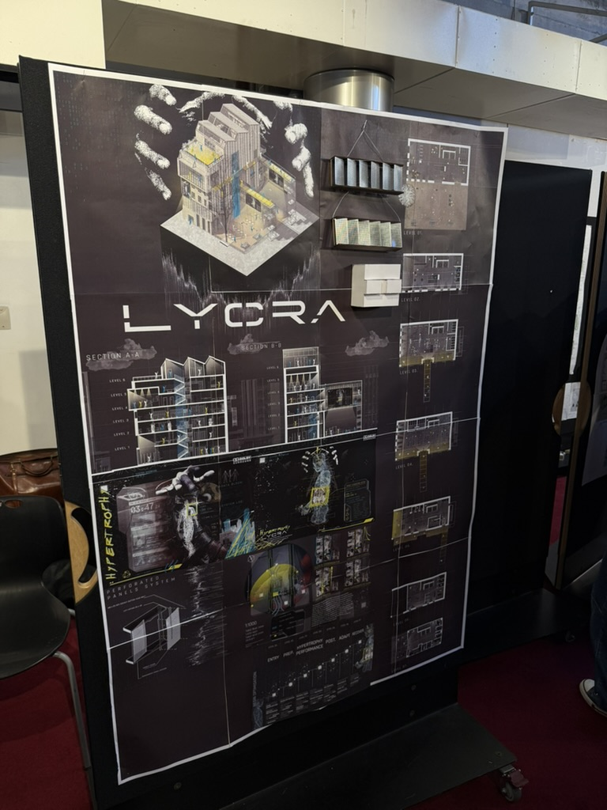

PROJECT / 01
An architectural investigation into gym culture, bodily optimisation and the point where self-improvement begins to become technological dependence.
The project transforms an existing Lorne Street building into a vertical sequence of training, adaptation and recovery. Architecture becomes part of the performance system: exposing movement, equipment, wearables and the changing relationship between the body and technology.

CONCEPT / BODY + MACHINE
The visual language tests a future in which performance data, wearables and bodily modification become embedded in everyday gym culture.


ARCHITECTURE / SEQUENCE



PHYSICAL / LIGHT
The physical model tests light passing through repeated facade panels, creating a controlled threshold between exposure and enclosure.

MOTION / EXPERIMENT
Motion study embedded directly into the project archive.


FINAL / CRIT
The final presentation brings the urban proposition, architectural sections, facade system, physical model and graphic research into one visual field.